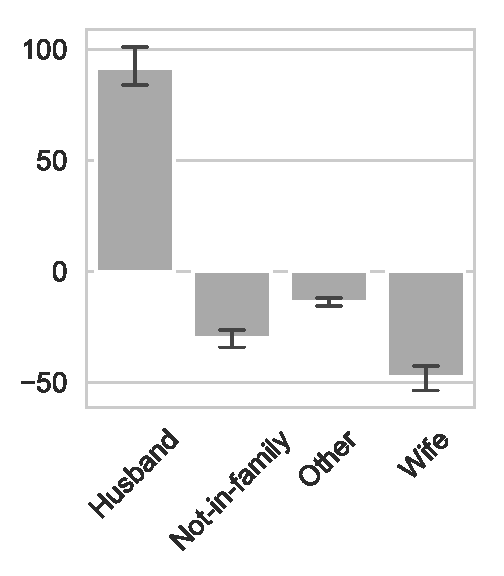

Fairness in Machine Learning
by Oliver Thomas and Thomas Kehrenberg
{ot44,t.kehrenberg}@sussex.ac.uk - Predictive Analytics Lab (PAL), University of Sussex, UK
Machine Learning
...using statistical techniques to give computer systems the ability to "learn" (e.g., progressively improve performance on a specific task) from data, without being explicitly programmed.
But there are problems:

Algorithmic bias
- machine learning systems are making decisions that affect humans
- these decisions should be fair
- by default machine learning algorithms tend to be biased in some way
- why?
Because the world is complicated!
The data is unlikely to be perfect.
The developer's (often arbitrary) decisions have a downstream impact
Business goals don't always align with fair behaviour
Biased training data
Bias introduced by the ML algorithm
Which fairness criteria to choose?
Let's have all the fairness!
If we are fair with regards to all notions of fair, then we're fair... right?
Which fairness criteria to choose?
Independence based fairness (i.e. Statistical Parity)
$$ \hat{Y} \perp S $$Separation based fairness (i.e. Equalised Odds/Opportunity)
$$ \hat{Y} \perp S | Y $$Which fairness criteria to choose?
For both to hold (in binary classification), then either
- $S \perp Y$, our data is fair, or
- $\hat{Y} \perp Y$, we have a random predictor.
Similarly, Sufficiency cannot hold with either notion of fairness.
Illustrative Example
Which fairness criteria to choose?
Consider a university, and we are in charge of administration!
We can only accept 50% of all applicants.
10,000 applicants are female and 10,000 of applicants are male.
We have been tasked with being fair with regard to gender.
University Admission
We have an acceptance criteria that is highly predictive of success.
80% of those who meet the acceptance criteria will successfully graduate.
Only 10% of those who don't meet the acceptance criteria will successfully graduate.
University Admission
As we're a good university we have a lot of applications from people who don't meet the acceptance criteria.
60% of female applicants meet the acceptance criteria.
40% of male applicants meet the acceptance criteria.
Remember, we can only accept 50% of all applicants
What should we do?
Truth Tables
Female Applicants
| Accepted | Not | |
|---|---|---|
| Actually Graduate | ||
| Don't Graduate |
Male Applicants
| Accepted | Not | |
|---|---|---|
| Actually Graduate | ||
| Don't Graduate |
Truth Tables
Female Applicants
| Accepted | Not | |
|---|---|---|
| Actually Graduate | $10000 \times 0.6 \times 0.8$ | $10000 \times 0.4 \times 0.1$ |
| Don't Graduate | $10000 \times 0.6 \times 0.2$ | $10000 \times 0.4 \times 0.9$ |
Male Applicants
| Accepted | Not | |
|---|---|---|
| Actually Graduate | $10000 \times 0.4 \times 0.8$ | $10000 \times 0.6 \times 0.1$ |
| Don't Graduate | $10000 \times 0.4 \times 0.2$ | $10000 \times 0.6 \times 0.9$ |
Truth Tables
Female Applicants
| Accepted | Not | |
|---|---|---|
| Actually Graduate | $4800$ | $400$ |
| Don't Graduate | $1200$ | $3600$ |
Male Applicants
| Accepted | Not | |
|---|---|---|
| Actually Graduate | $3200$ | $600$ |
| Don't Graduate | $800$ | $5400$ |
University Admission
Our current system satisfies calibration-by-group!
$$Y \perp S | \hat{Y}$$How would we solve this problem being fair using Statistical Parity as our measure?
Select 50% of applicants of both female and male applicants
10% of qualified female applicants are being rejected whilst an additional 10% of unqualified males are being accepted.
Female Applicants
| Accepted | Not | |
|---|---|---|
| Actually Graduate | $5000 \times 0.8$ | $(1000 \times 0.8) + (4000 \times 0.1)$ |
| Don't Graduate | $5000 \times 0.2$ | $(1000 \times 0.2) + (4000 \times 0.9)$ |
Male Applicants
| Accepted | Not | |
|---|---|---|
| Actually Graduate | $(4000 \times 0.8) + (1000 \times 0.1)$ | $5000 \times 0.1$ |
| Don't Graduate | $(4000 \times 0.2) + (1000 \times 0.9)$ | $5000 \times 0.9$ |
Female Applicants
| Accepted | Not | |
|---|---|---|
| Actually Graduate | $4000$ | $1200$ |
| Don't Graduate | $1000$ | $3800$ |
Male Applicants
| Accepted | Not | |
|---|---|---|
| Actually Graduate | $3300$ | $500$ |
| Don't Graduate | $1700$ | $4500$ |
Female Applicants
| Accepted | Not | |
|---|---|---|
| Actually Graduate | -800 | 800 |
| Don't Graduate | -200 | 200 |
Male Applicants
| Accepted | Not | |
|---|---|---|
| Actually Graduate | 100 | -100 |
| Don't Graduate | 900 | -900 |
How would we solve this problem being fair using Equal Opportunity as our measure?
| Accepted | Not | |
|---|---|---|
| Actually Graduate | $TP$ | $FN$ |
| Don't Graduate | $FP$ | $TN$ |
Female Applicants
| Accepted | Not | |
|---|---|---|
| Actually Graduate | $4440$ | $760$ |
| Don't Graduate | $1110$ | $3690$ |
Male Applicants
| Accepted | Not | |
|---|---|---|
| Actually Graduate | $3245$ | $555$ |
| Don't Graduate | $1205$ | $4995$ |
Female Applicants
| Accepted | Not | |
|---|---|---|
| Actually Graduate | -360 | 360 |
| Don't Graduate | -90 | 90 |
Male Applicants
| Accepted | Not | |
|---|---|---|
| Actually Graduate | 45 | -45 |
| Don't Graduate | 405 | -405 |
Fairness based on similarity
- First define a distance metric on your datapoints (i.e. how similar are the datapoints)
- Can be just Euclidean distance but is usually something else (because of different scales)
- This is the hardest step and requires domain knowledge
Pre-processing based on similarity
- An individual is then considered to be unfairly treated if it is treated differently than its "neighbours".
- For any data point we can check how many of the $k$ nearest neighbours have the same class label as that data point
- If the percentage is under a certain threshold then there was discrimination against the individual corresponding to that data point.
- Then: flip the class labels of those data points where the class label is considered unfair
Considering similarity during training
Alternative idea:
- a classifier is fair if and only if the predictive distributions for any two data points are at least as similar
as the two points themselves
- (according to a given similarity measure for distributions and a given similarity measure for data points)
Considering similarity during training
- Needed similarity measure for distributions
- Then add fairness condition as additional loss term to optimization loss
Which fairness criteria should we use?
We've seen several statistical definitions and Individual Fairness
There's no right answer, all of the previous examples are "fair". It's important to consult domain experts to find which is the best fit for each problem.
There is no one-size fits all.
Delayed Impact of Fair Learning
In the real world there are implications.
An individual doesn't just cease to exist after we've made our loan or bail decision.
The decision we make has consequences.
The Outcome Curve

Possible areas
| Area | Description |
|---|---|
| Active Harm | Expected change in credit score of an individual is negative |
| Stagnation | Expected change in credit score of an individual is 0 |
| Improvement | Expected change in credit score of an individual is positive |
Possible areas
| Area | Description |
|---|---|
| Relative Harm | Expected change in credit score of an individual is less than if the selection policy had been to maximize profit |
| Relative Improvement | Expected change in credit score of an individual is better than if the selection policy had been to maximize profit |
Removing a sensitive feature
"If we just remove the sensitive feature, then our model can't be unfair"
This doesn't work, why?
Removing a sensitive feature
Because ML methods are excellent at finding patterns in data
Pedreschi et al.
Reweighing
Kamiran & Calders determined that one source of unfairness was imbalanced training data.
Simply count the current distribution of demographics

Reweighing
Then either up/down-sample or assign instance weights to members of each group in the training set so that the results are "normalised".

Problems with doing this?
Any Ideas?
Problems with doing this?
What does this representation mean?
The learned representation is uninterpretable by default. Recently Quadrianto et al constrained the representation to be in the same same as the input so that we could look at what changed
Problems with doing this?
What if the vendor data user decides to be fair as well?
Referred to as "fair pipelines". Work has only just begun exploring these. Current research shows that these don't work (at the moment!)
Variational Fair Autoencoder
idea: Let's "disentangle" the sensitive attribute using the variational autoencoder framework!
Variational Fair Autoencoder

Louizos et al. 2017
Variational Fair Autoencoder
Where $z_1$ and $z_2$ are encouraged to confirm to a prior distribution
Problems with doing this?
Similar to adversarial model, but more principled.
How to enforce fairness?
During Training
Instead of building a fair representation, we just make the fairness constraints part of the objective during training of the model. An early example of this is by Zafar et al.How to enforce fairness?
During Training
Given we have a loss function, $\mathcal{L}(\theta)$.
In an unconstrained classifier, we would expect to see
$$ \min{\mathcal{L}(\theta)} $$How to enforce fairness?
During Training
To reduce Disparate Impact, Zafar adds a constraint to the loss function.
$$ \begin{aligned} \text{min } & \mathcal{L}(\theta) \\ \text{subject to } & P(\hat{y} \neq y|s = 0) − P(\hat{y} \neq y|s = 1) \leq \epsilon \\ \text{subject to } & P(\hat{y} \neq y|s = 0) − P(\hat{y} \neq y|s = 1) \geq -\epsilon \end{aligned} $$Transparency and Fairness
Results on the adult income dataset
|
- Analysis on the relationship feature - Feature values of the minority group are transformed to match the majority group - Here, the wife value is translated to husband |
 |
Results on the adult income dataset
Interpretable can be fair!
| original $X$ | fair & interpretable $X$ | latent embedding $Z$ | ||||
| Accuracy $\uparrow$ | Eq. Opp $\downarrow$ | Accuracy $\uparrow$ | Eq. Opp $\downarrow$ | Accuracy $\uparrow$ | Eq. Opp $\downarrow$ | |
| LR | $85.1\pm0.2$ | $\mathbf{9.2\pm2.3}$ | $84.2\pm0.3$ | $\mathbf{5.6\pm2.5}$ | $81.8\pm2.1$ | $\mathbf{5.9\pm4.6}$ |
| SVM | $85.1\pm0.2$ | $\mathbf{8.2\pm2.3}$ | $84.2\pm0.3$ | $\mathbf{4.9\pm2.8}$ | $81.9\pm2.0$ | $\mathbf{6.7\pm4.7}$ |
| Fair Reduction LR | $85.1\pm0.2$ | $\mathbf{14.9\pm1.3}$ | $84.1\pm0.3$ | $\mathbf{6.5\pm3.2}$ | $81.8\pm2.1$ | $\mathbf{5.6\pm4.8}$ |
| Fair Reduction SVM | $85.1\pm0.2$ | $\mathbf{8.2\pm2.3}$ | $84.2\pm0.3$ | $\mathbf{4.9\pm2.8}$ | $81.9\pm2.0$ | $\mathbf{6.7\pm4.7}$ |
| Kamiran & Calders LR | $84.4\pm0.2$ | $\mathbf{14.9\pm1.3}$ | $84.1\pm0.3$ | $\mathbf{1.7\pm1.3}$ | $81.8\pm2.1$ | $\mathbf{4.9\pm3.3}$ |
| Kamiran & Calders SVM | $85.1\pm0.2$ | $\mathbf{8.2\pm2.3}$ | $84.2\pm0.3$ | $\mathbf{4.9\pm2.8}$ | $81.9\pm2.0$ | $\mathbf{6.7\pm4.7}$ |
| Zafar et al. | $85.0\pm0.3$ | $\mathbf{1.8\pm0.9}$ | --- | --- | --- | --- |
Problems?
Spurious and non-spurious visualisations are not exciting!
Residual unfairness (transferability)


Causality
Motivation:
- Fairness metrics so far have only looked at correlations between the sensitive attribute and the prediction
- But isn't a causal path more important?
Causality
Example:
Admissions at Berkeley college.
Men were found to be accepted with much higher probability. Was it discrimination?
Causality
Was it discrimination?
Not necessarily! The reason was that women were applying to more competitive departments.
Departments like medicine and law are very competitive (hard to get in).
Departments like computer science are much less competetive (because it's boring ;).
Causality
- $R$: admission decision
- $A$: gender
- $X$: department choice

Causality
If we can understand what causes unfair behavior, then we can take steps to mitigate it.
Basic idea: a sensitive attribute may only affect the prediction via legitimate causal paths.
But how do we model causation?
Causal Graphs
Solution: build causal graphs of your problem
Problem: causality cannot be inferred from observational data
- Observational data can only show correlations
- For causal information we have to do experiments. (But that is often not ethical.)
- Currently: just guess the causal structure
Path-specific causal fairness
$A$ is a sensitive attribute, and its direct effect on $Y$ and effect through $M$ is considered unfair. But $L$ is considered admissible.

Path-specific causal fairness
With a structural causal model (SCM), like this:

You can figure out exactly how each feature should be incorporated in order to make a fair prediction.
Path-specific causal fairness
- Advantage: we can figure out exactly how to avoid unfairness
- Problem: requires an SCM, which we usually don't have and which is hard to get
- Problem: we have to decide for each feature individually whether it's admissible
- This will not work for computer vision tasks where the raw features are pixels
Counterfactual Fairness
- slightly different idea but also based on SCMs (structural causal model)
- we're basically asking: in the counterfactual world where your gender was different, would you have been accepted?
- counterfactual: something that has not happened or is not the case
Counterfactuals
Example of a counterfactual statement:
If Oswald had not shot Kennedy, no-one else would have.
This is counterfactual, because Oswald did in fact shoot Kennedy.
It's a claim about a counterfactual world.
Counterfactual Fairness
$U$: set of all unobserved background variables
$P(\hat{y}_{s=i}(U) = 1|x, s=i)=P(\hat{y}_{s=j}(U) = 1|x, s=i)$
$i, j \in \{0, 1\}$
$\hat{y}_{s=k}$: prediction in the counterfactual world where $s=k$
practical consequence: $\hat{y}$ is counterfactually fair if it does not causally depend (as defined by the causal model) on $s$ or any descendants of $s$.
The problem of getting the SCM
- Causal models cannot be learned from observational data only
- You can try, but there is no unique solution
- Different causal models can lead to very different results
Example with Causal Graphs
Example: Law school success
Task: given GPA score and LSAT (law school entry exam), predict grades after one year in law school: FYA (first year average)
Additionally two sensitive attributes: race and gender
Example with Causal Graphs
Two possible graphs

Causality — Summary
- Causal models are very promising and arguably the "right" way to solve the problem.
- However these models are difficult to obtain.